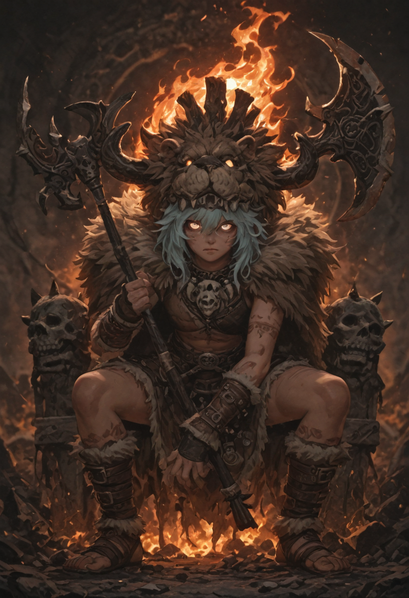
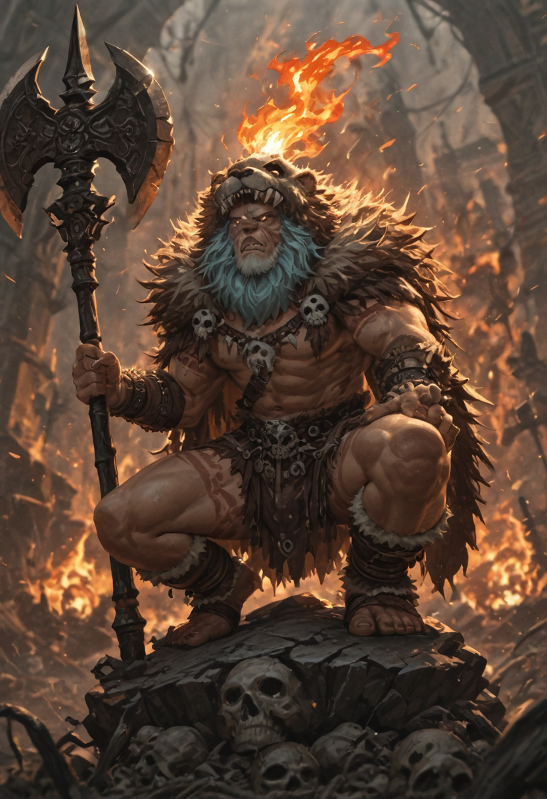
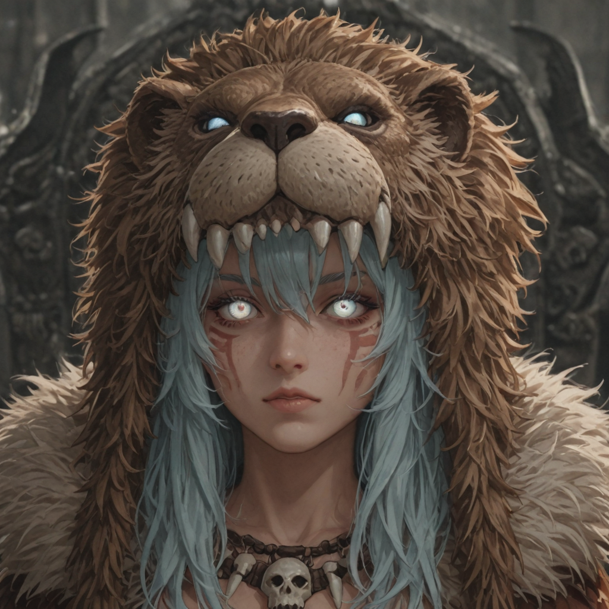

The Right of the Strongest
The Ruler of the Kharos Dominion is the undeniable victor of the Day of Evolution, the bloody tournament where all potential leaders compete to prove who is most fit for absolute rule. If the current Warchief dies unexpectedly—whether due to sickness, assassination, or falling in battle—a new tournament is held as soon as possible to find a replacement.
Not all Warchiefs are legendary warriors or master tacticians; some have won through sheer, unadulterated luck. In the Dominion, however, luck is considered a skill in itself. No matter the method of their victory, conquering the tournament grants them the absolute right to shape the Dominion exactly as they wish.
Legendary Artifacts
The Warchief’s regalia consists of two legendary artifacts passed down since the first Warchief, Themis:
- Supremacy – The severed head of a monstrous manticore, slain by Themis with his bare hands. Worn proudly, it serves as a terrifying symbol that human potential can overcome even the deadliest beasts.
- Unchained – A massive greataxe forged from legendary materials. The weapon resonates with the user's fury: the more the wielder unleashes their willpower, the more the weapon increases their physical power, creating a devastating feedback loop of destruction.


Role and Power
The Warchief usually never leaves the capital. They are the undeniable head and heart of the Dominion; without their direct guidance, the faction would be little more than a headless beast rampaging with no clear intent.
However, absence from the frontlines does not mean absence from the battle. The Warchief possesses the sheer power and magical aptitude necessary to unleash devastating abilities and assist their troops from afar, turning the tide of distant conflicts from the safety of their throne.
Visual Archives


Combat Interface

Shatter Earth
Base SkillThe Ruler slashes forward with the axe, unleashing a wave of massive destruction.
- Deals Physical damage to all enemies in front of the unit.
- 20% chance to knock down enemies, Stunning them for 1 turn.

Unleash Destruction
Active SkillThe Ruler empowers the axe, generating a shockwave of terrible proportions.
- Deals 75% Physical damage to all enemies.
- Applies Stun based on enemy tier:
- Tier 1–3: Stunned for 2 turns
- Tier 4 & Officers: Stunned for 1 turn
- Tier 5: Immune to stun

Unchained Will
PassiveThe Ruler has no desire to hold back and fights with absolutely no restraints.
- Immune to control effects (stun, fear, mind control), unless immunity is specifically negated.
- Restores 5% of damage done as HP.
- Damage Bonus: For every 20% HP missing, armor increases by 10%. (Maximum bonus: +40% Armor when below 20% HP).

True Berserk
UltimateThe Ruler goes into a frenzy, drastically increasing his power and regenerative abilities.
- Applies True Berserk to self for 2 turns.
- Doubles the amount of healing granted by Unchained Will.
- Skill damage is increased by +50%.